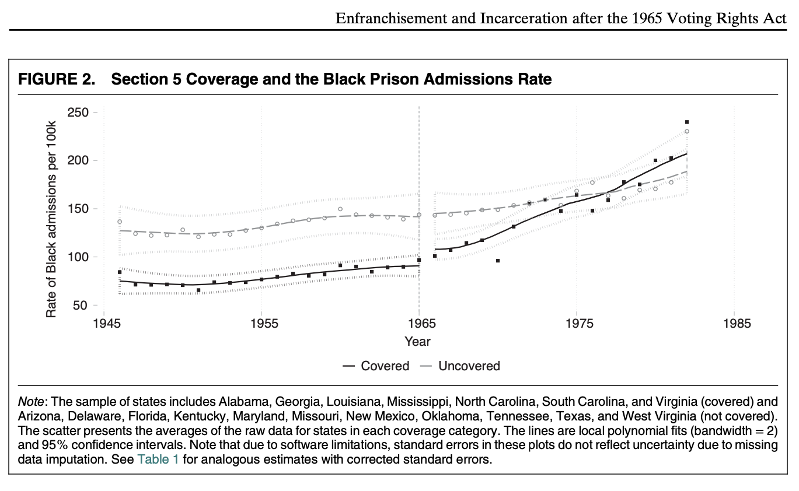

Writing to Stakeholders#
In the spirit of what is to follow, I will begin with the most important idea in this reading:
The key to effective writing to stakeholders is to continually ask yourself — where ever you are in your document, whatever your thinking of writing, and whatever you’re debating including — if my stakeholder stopped reading my report right at this spot, have I told them everything I want them to have learned.
Why Learning to Write to Stakeholders is Hard#
As students (especially data science students), the way most of us were taught to write reports is to:
start with an introduction that helps explain the broader context in which the report is being positioned,
describes the data that we intend to use,
describe that how we have wrangled and cleaned that data,
describe how we plan to model that data,
report the results,
and discuss limitations and tack on a boilerplate conclusion.
This structure makes a lot of sense in the context of a class because the order of presentation mirrors the objectives of the assignment: demonstrate that you understand the substantive topics that are being taught, demonstrate that you are being thoughtful about the data that you are collecting and that you have internalized the emphasis your instructors have placed on the importance of data cleaning, and that you understand the principles of data modeling. Results come last because in the context of a class, your results don’t actually matter. No professor is going to make a major business decision on the basis of a student report, and no government is going set policy on the basis of what you say.
This structure — which almost entirely front loads material that is not particularly interesting to the instructor — is also viable because it is basically the job of the reader (your instructor or teaching assistant) to read everything you wrote.
Putting Yourself in the Stakeholder Shoes#
None of that is true in the real world. In fact, I would argue that being taught to write reports in this manner is about the worst possible preparation one could give students for learning to communicate to real-world stakeholders for two key reasons:
In the real world, the only thing that your stakeholder actually cares about are the conclusions you have reached about how to solve their problem (i.e. your results and how they relate to the stakeholder’s problem).
There is nothing more scarce in any organization than a decision makers time, and so the moment it stops being obvious to the decision maker why the material their reading is directly relevant to solving their problem, there is a very high probability that they will let their attention shift to one of the other hundred critical issues vying for their attention.
Because of these two facts, when writing to a stakeholder you should always — always — be asking yourself two questions:
If my stakeholder stopped reading right now, have I already told them the things that I think it is most important they walk away knowing? and
At every transition — between sections, between topics, and even between paragraphs — is it explicitly clear to the reader that what follows is relevant to solving the stakeholder’s problem so they have and affirmative reason to not get distracted?
What does this look like in practice? It depends a little bit on how much of your stakeholder’s attention you think you can get in the best of circumstances (intelligence briefings were written very differently for Donald Trump than for Barack Obama), but the structure I am going to advocate for is roughly the following:
Executive Summary: A full summary of absolutely everything you want your stakeholder to walk away knowing if they were to read nothing else in about two to four paragraphs. State the problem that you are setting out to address, state the question that you’re going to answer in order to help solve that problem, and at a very high level state how you are going to answer that question, state the answer you have found, reiterate how that result helps solve the problem.
Context: With the Executive Summary out of the way, you have hopefully piqued your stakeholder’s interest just enough to double back and provide a little more context about the problem you are trying to address and the context and which it is situated. But don’t get complacent — even here, it is important to very clearly and explicitly motivate why all of the information you are providing is relevant to solving the stakeholder’s problem effectively.
This is where the answers you generated to your Exploratory Questions fit — they provide information to your stakeholder about why you have chosen to prioritize certain facets of the problem, and why those choices are correct.
Your Strategy: Now you get to explain how you are going to answer the question that will help solve the stakeholder’s problem in more detail. But don’t get lost in the weeds — the stakeholder only needs to understand enough about your strategy (including your data) to be able to evaluate how much confidence they should have in our results and conclusions.
This is perhaps the hardest section for data science students to write, not because they can’t think of what to put here, but because they want to include way, way too much. There is a very natural and very human tendency when you finish a project that you have put a tremendous amount of work into to talk about all of the work you did. And most of that work will involve wrestling with data, dealing with merging issues, tuning models, etc. But almost nothing you have done in this domain is something that your stakeholder needs to know about. You can write it all up — there may very well be some people on the stakeholder’s staff who will want to read it — but it belongs at the back of the report in an appendix, not in the body of the report.
The only exceptions to this rule are places where you exercised substantial discretion in how you handled the data or constructed your sample. If you exercised discretion in a substantial way that may impact how one interprets the conclusions of the report — for example, you had to choose which states to include in an analysis as control states — you can/should include a brief explanation for your reasoning along with a link to an appendix were you discuss those choices in detail.
Your Results: Now you get to present your results in greater detail. Note that nothing here should come as a surprise to the reader — don’t try and “hide the ball” to build suspense by not revealing your findings till now because while you may think what you’ve done is so interesting that the suspense will draw the reader in, in reality, it just means that when your stakeholder doesn’t make it past the Executive Summary, they will not have learned the thing you spent so much time trying to learn.
Also, note that while this structure still has a results section towards the end, because you have kept your Context and Strategy sections very short, it should actually be coming up much sooner than your results would come up in a normal class report (in terms of the page number on which it appears).
Relating It Back To The Problem: And now we bring things full circle — now that you presented your results, you have to make sure that your reader hasn’t lost the thread by relating your results back to the problem that motivated your analysis to begin with.
Wow! What a Great Way of Thinking About This? Did You Invent This Yourself?#
Obviously not. And now that you are primed to think about how writing can be organized in a manner that reflects the likelihood that most people who pick up a document won’t actually read it all the way to the end, you will start to see how people front load the things they think matter most everywhere.
Journalism is the quintessential example of this style of writing. No one reads entire news articles, so they are always nearly organized with the most critical information up front, after which they double back to fill in additional details for anyone still reading. There are a number of different ways this can be accomplished — for example the inverted pyramid — start with “who? what? when? where? how?”, then add important details, then add context — is one of the first article formats journalists are introduced to.
But the structure I think you’re likely to see most if you start looking for it is that in the first two or three paragraphs of a well-written news story, you will notice that there is a single paragraph that is designed to summarize everything that the journalist wants you to know about the story — the “nut graph”.
Academic publications also usually follow this structure. They start with an abstract (essentially an Executive Summary of the Executive Summary), an “introduction” (which is, in effect, an Executive Summary), a literature review (to establish why what they’re doing is novel and provide some broader context), a not too long discussion of their methodology, their results, and a short conclusion that ties the results back to the motivating question. All the sensitivity analyses, detailed discussion of the data, etc.? Those go into an “Online Only Appendix,” a document that is often easily twice as long as the article itself.
Other Points To Bear In Mind#
Putting The Pieces Together#
In this course, we’ve spent a lot of time establishing taxonomies — ways of organizing and recognizing the many distinct things that we do as data scientists. The assignments we have done for this class have often been structured in a manner to emphasize these distinctions. But when writing to a stakeholder, you don’t want to hold too rigidly to those distinctions. A good report to a stakeholder will not consist of stapling together all of the assignments we’ve done in this class one after the other. The goal of a good report is to construct a narrative that consistently and effectively communicates a key idea to the reader.
Many of you will be familiar with the idea of the “five-paragraph essay.” The five-paragraph essay is a structure that is often used to introduce students to essay writing — you start with an introductory paragraph, you write three paragraphs, each of which starts with a topic sentence and then includes evidence in support of that topic sentence, and then you write a conclusion paragraph. It is a useful framework for introducing students to essay writing, but it is also a framework that is best left behind as soon as it is understood.
The emphasis the assignments we have done in this class puts on different types of questions is similar — the goal is to make sure you can recognize the different types of questions and the purposes to which we put them. But your stakeholder report should not include a section called Exploratory Questions — rather the answers you generated in answering your Exploratory Questions should be reflected in how you’ve refined your problem statement, and the results of some of those analyses will likely make an appearance as tools for motivating the focus of your final analysis.
Justify Your Methods With Concrete Examples#
In discussing the methods you choose to use — such as a difference-in-difference design or matching — be sure to explain why you’re using the method in concrete terms that are relevant to the context in question, and without using technical language your stakeholder may not understand.
If you’re doing a difference-in-difference design (and not just a pre-post comparison), give examples of specific events that would cause problems for a simple pre-post analysis but that aren’t a problem for the difference-in-difference design you are using. Consider the opioid project from IDS 720. In that project, we estimated the effect of state-level changes in opioid prescription regulations in states like Florida and Texas on opioid shipments and overdoses. For that project, it was important to give an example — like the US federal government creating a national limit on the amount of opioids manufacturers were allowed to ship to individual clinics around the same time — that would cause incorrect inferences to be drawn from a simple pre-post comparison, but not from our design of choice (a difference-in-difference).
If you don’t include an example like this, it won’t be clear to the stakeholder why you feel fancy techniques are necessary. And if you can’t think of an example like this, then maybe you don’t need the fancy technique at all!
Data Cleaning#
As noted above, a discussion of data cleaning and data wrangling does not belong in the body of your report. The only exception to this rule is when you were forced to exercise substantial discretion in a way that may impact the internal or external validity of the analysis in a meaningful way (for example, selection of control states, or dropping certain time periods from the analysis you feel are too anomalous).
Even in these situations, however, it is usually best to explain the logic behind the decisions you made but relegate additional discussion (statistics related to the choice) to an appendix.
Oh, and please never use verbatim variable names in reports — they’re fine in appendices, but in the body of a report you should explain what you’re measuring in substantive terms someone without the data documentation can understand.
Figures#
Not everyone may agree with this approach, but my philosophy with plots is that they should be more or less freestanding — if a reader were to only look at the figures in a report, the labels on the axes, the titles, and any notes associated with the figure, they should be able to get a pretty good understanding what’s going on without having to go read the text in the report.
For example, this plot (which, yes, is from a paper on which I am a co-author, but all credit for the figure quality goes to my coauthor):

Limitations#
There is a tendency for students to use their “Limitations” sections to, well… just try and cover their butts by throwing out anything they can think of about the paper that is imperfect. That’s ok in the classroom, but it’s not useful in the real world.
The point of a Limitations section isn’t to demonstrate your ability to identify any imperfections in the study; the point of a limitation section is to give your stakeholder a sense of how much confidence they should have in the results presented in the report from your professional perspective. Just because you had to make an assumption does not mean that the assumption constitutes a “limitation” of the study unless you have reason to think that the assumption is unlikely to be true (or is sufficiently untrue as to impact the results). Please only include things in your limitation section that you think really are substantive limitations!